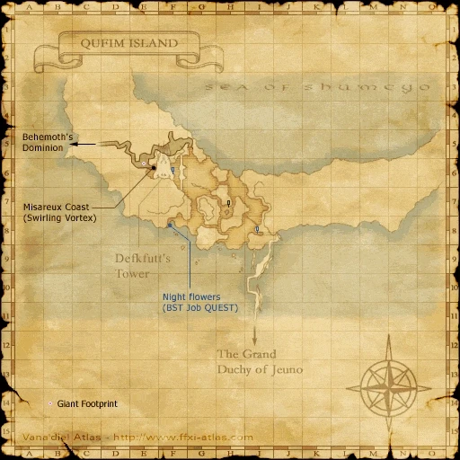

Before you begin
- Complete ACP 3.
Starting point
??? · Qufim Island · G-6
Era note: 2009 level-75-era add-on. Modern retail shortcuts and item-level solo claims are not assumed on Zenith.
Walkthrough
- Prepare beside the same G-6 ??? with the participating party nearby, then examine it again to start the confrontation.
- Defeat all 30 Seed Mandragoras within the 30-minute field battle. Keep the fight inside the encounter area and do not zone away.
- After victory, examine the ??? again for the concluding scene. Confirm that Those Who Lurk in Shadows (I) is active.
Battle and progress notes
- If the fight fails, recollect the three Goblin NM seedspall key items before trying again.
- The reference confrontation dismisses Trusts on entry; Zenith behavior is not confirmed.
Completion and reward
Amber key and story progression.
What this opens
- ACP 5
Area maps
Open a zone below, then select a map to enlarge it. Match the named floors and grid coordinates in the steps; these are reference area maps, not a live position tracker.
Qufim Island



Zone guides
References
Steps are an original summary of the linked walkthrough and reviewed source. Other servers’ bonus rewards are not included. How to read requirements, waits and battlefield notes.